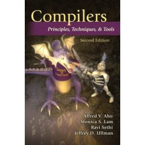

|  |
Lecture NotesCompilers: Principles, Techniques, and Tools |
These course lecture notes supplement topics from each textbook chapter:
Lexical Analysis (Chapter 3)
Syntax Analysis (Chapter 4)
Syntax-Directed Translation (Chapter 5)
Intermediate-Code Generation (Chapter 6)
Run-Time Environments (Chapter 7)
Code Generation (Chapter 8)
Machine-Independent Optimizations (Chapter 9)
Instruction-Level Parallelism (Chapter 10)
Optimizing for Parallelism and Locality (Chapter 11)
Interprocedural Analysis (Chapter 12)
Misc.
[1] Stanford CS243: Advanced Compiling Techniques, Winter 2008, Prof. Monica Lam
[2] MIT 6.035: Computer Language Engineering, Fall 2005 (OpenCourseWare), Prof. Saman Amarasinghe and Prof. Martin Rinard
[3] Columbia COMS W4115: Programming Languages and Translators, Spring 2008, Prof. Alfred Aho
[4] Columbia COMS W4117: Compilers and Interpreters: Software Verification Tools, Fall 2007, Prof. Alfred Aho
[5] Stanford CS143: Compilers
Last modified: 2008-09-15
Page created by Philip J. Guo